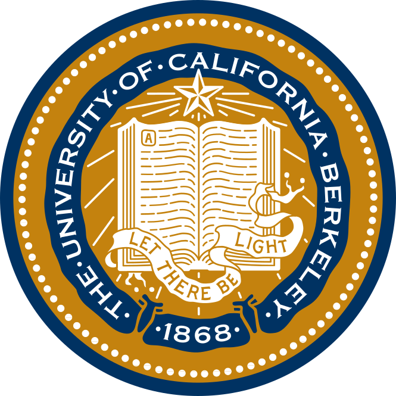
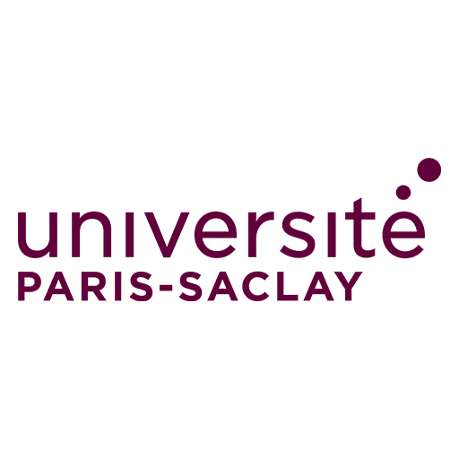

7/8/2024: I have recently graduated fron University of California, Berkeley and am currently in Lille, France. I am observing the natural world, taking note of the how we have intertwined our society to fit within the space as well as how we have dominated the land. Later in July, I will be moving to San Francisco, living with my buddies from school and my hometown in San Diego.
7/10/2024: I will be working in and around the city to get the most wholistic experience. I will be working on projects with respect to data science, artificial intelligence and complex networks over the course of the year learning and improving new skills as well as those I am familiar with. I enjoy spatial intelligence(Geospatial Data Science) where we attempt to draw inference and understanding of the human interaction with space throughout the daily life.
11/18/2024: I have started work as a Research Associate in Data Science at UC Berkeley under supervision of Dr. Albert Ruhi, Dr. Stephanie Carlson and Dr. Robert Fournier. I am researching complex methods for ecosystem modeling within the San Francisco Bay and Delta.
------I am a recent graduate from UC Berkeley who loves to learn by following my passions and question those who are admirable. I am raised by the most loving and supportive parents who, in their own ways tought me how to be respectful, compassionnate, hard working and joyous. I appreciate life as it comes to me, and I work to open up possibilities this world has to offer.
------By keeping my eyes open as I move about places, I am able to take in experiences that help to shape my perspectives. I have been lucky enough to travel to many unique places within the United States and beyond. I am super excited by how we have attempted to integrate our society with the world that we have built upon, some places better than others, but there is always the excitement of the re-integration of the natural world with our built environment. This is a core aspect of my research interests in modeling of the natural world in order to best evaluate how we can return to a semi-harmonious state as soon as possible with as little disruption to the principles that our society has been built upon.
------I get excited about surfing in front of my house, skating to the transit stops, and bussing around the Bay. I have been enjoying living with some of my closest friends, meeting new people, fiding the local spots and shopping at the farmers market promoting healthy cooking using fresh produce from local producers. After graduation, I am learning the ways of the world, finding out where we fit, what we can do, and how we can act. Amidst chaos is beauty.
09/20/2025: Today is a rainy day in the 14th arrondissement of Paris. Auto Complete does not know how to fill in my sentences(arguably an amazing thing because we are human and it is a machine). I am studying Artificial Intelligence amongst a group of world travelers and intellectuals in a time when AI is highly debated and discussed. It is a field of uncertainty and desire and we are hoping to march forward with care for where we step to ensure that we do not tread on the individuals and spaces. It is funny because people have built computing and AI to be "too big to fail" but there is little consideration of the base on which it is built because abstraciton is the name of the game.
I am really excited to complement my "foundational knowledge" of mathematics with the moderm computing principles which is very much driven by these principles, theorems and laws. We see a possible future where AI can improve parts of life that are too complex for us to design under the manpower and timeframe that they are desired.
------ San Francisco is an amazing place and the experiences surrounded by those who taught me to listen and think was spectacular. To those in the supper club, I still think about the meals we prepared, the fufu, the wings, the chili and the beers. To those who I met in a moment, I hope we may all smile about the time we shared. To my darling, bouncing around like magnets in a pinball machine is quite special; whenever we recconect I am so greatful.
12/19/2025: The tail-end of 2025 is upon us, joy of all that has come and is to come shines bright in my mind. A year of exploration together and alone. Living in the big yellow house on Fulton st. San Francisco provided me the best playground, biking, surfing, learning and working!
----- Living with the best, GAGE, Evan, Max and Kyle! Hosting countless parties for our friends, our family of diners. We made it happen.
----- Hopping across the bay to Berkeley with whom I designed and presented my first poster to local legends in the field. I worked alongside a team of curious individuals who encouraged me at every step of the way. With them I carried out two projects and had my first publication into an article in 2025.
----- I went to the Philippines to celebrate my girlfriends birthday and explore a place I had rarely thought of before. We were off the grid, living as the locals do to some degree, biking and eating at little stands. Enjoying the sun and the blue waters of various islands. Taking on the rain... ----- For the 4th of July my friends and I hiked in 60 beers on ice several miles for our campout in POINT REYES. It felt more wild than I had ever experienced. The wildness of California is something I miss most while here in Paris. Elijah and I were the firemen, burning all we could to stay warm during the cold of the night. Fire goes out and we scurry back to our camp. ----- San Diego was home for short stints in the summer! Swamis with my parents reminded me that peace exists if (a) you are somewhat lucky and (b) if you take advantage of what's around you. ----- My parents, Madi and I drove to SLO first to see Jeremy! His couch and air-mattress were just what we needed, his town is perfect, but changing quite quick! ----- Yosemite was next of the list and camping with the parents plays differently, their experience shows. The drive was peaceful, the temperature nothing short of warm, and the crowds felt non-existent! While a wild Yosemite is something I enjoy reading about in The Mountains of California by Muir, the modernity of the facilities creates an almost playful experience for those who can get over the extremes of nature. I want to hike the hills sometime, with Willie would be good. ----- I surfed with Hunter, Beethoven and Madi several times in my minivan and went on writing retreats back to Point Reyes. The minivan in the bay was quite a classic moment in time. All dimensions covered! ----- I left the bay, bay through SLO to a new home of Jeremys and into BIG SUR. Peace in the sea breeze that brushes your face. Homeward bound to SAN DIEGO and not long before OAXACA (SALINA CRUZ) with Nate, Evan, Molga and Nolan. Dreamy beach days, right hand points and empty blue waters. Living on the ranch! ----- Final move of the year was PARIS for a masters degree in ai. Haha it makes me giggle that I can manage this, learn so much about a subject so exciting, meet so many people from around the globe. I love the idea of working in a dream vacation location, I feel so free to be myself here. Not so different from the Bay or San Diego, just some warmer clothes or stronger bones. I am staying kind and gracious as I hope to always be. -----My dad and I returned to Italy (SARDIGNA/ROME) and yet again, that was a dream. School starts, my Dad returns for his stop through and I show him the Paris I have discovered since being here for a week. Joy of the walking, joys of the sights. I introduced him to Idrissa over a nice dinner and we had so much fun. 3 Canard. ----- Before long, I was back to the beach to see Kyle and Lee. Morocco (TANGEER) a friendly place. ----- A Month more, I was itching for the beach and made my way to HOSSEGOR and scored. I found a epic hostel, some friends and some local insight into the waves. I saw people get those ones you dream about. I felt it! ----- School ramped up and I had to dodge away to Portugal (LISBOA) to spend my Birthday. I love that place more than most. I will be back. ----- To finish the year I will be going to the Alpes to celebrate Christmas with the Blachets, who have so warmly taken me in and offered a home for me. Then MADI returns to PARIS so we can celebrate New Years with Beethoven and Nathalie.
2026 is not so far away, but we are going to roll on with the good energy.
----- In the month of November 2025 I lost one of my best friends, for he could not face the struggle any longer. A struggle hidden to the outside world, he fought hard and shared so many moments with the lot of us. We are truly blessed to have him in our hearts, our memories and our lives. I want to send my gratitude to him for the selfless joy he provided to the world around him amidst the uncertainty and hardships he was facing. In any battle, there are some that win and some that lose, and I believe he won. You will be missed, you will live on with us in the many things we shared, in the guitar riffs, the waves watched and ridden and the oysters shucked and sucked. Much Love.